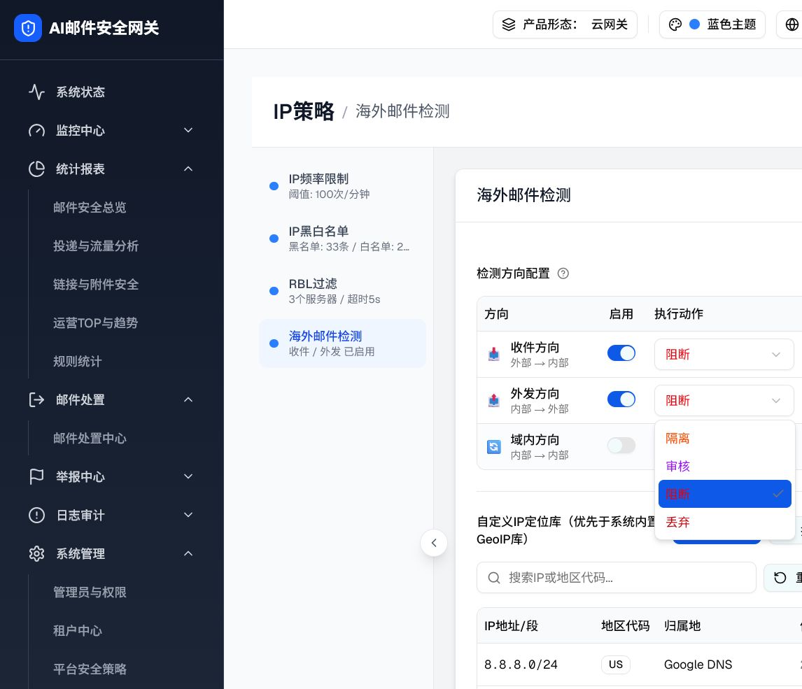
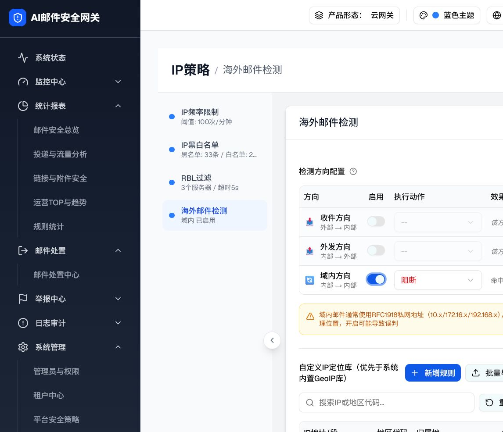
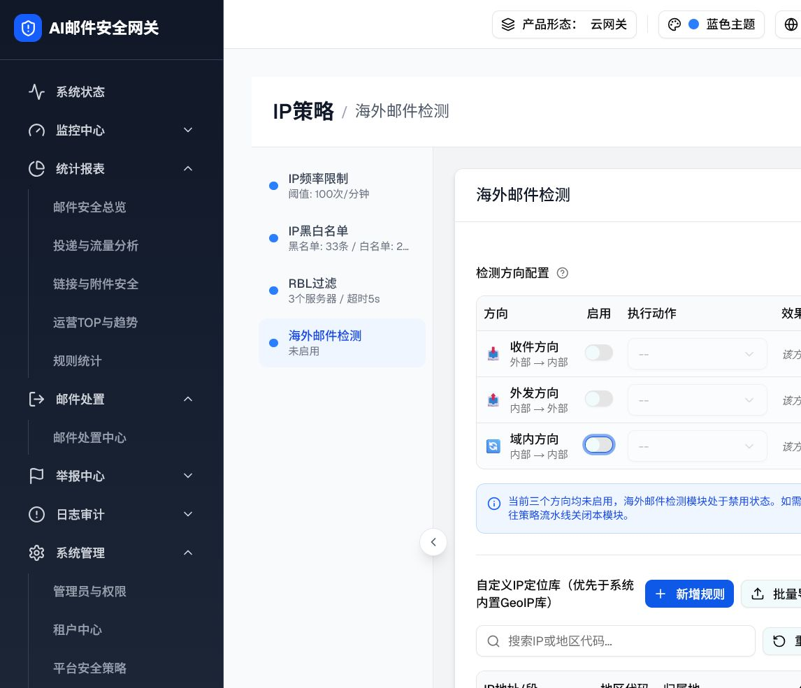

2.1 海外邮件检测主配置面板（OverseasDetectionPanel）
| 属性 | 值 |
|---|---|
| 源码位置 | connection-layer-page.tsx L1236–1353（renderOverseasConfig） |
| 交互层级数 | 1 层（层级 0：初始态，内嵌） |
| State | overseasDirections: { inbound/outbound/internal: { enabled, action } }，初始值：inbound.enabled=true / action="block"；outbound.enabled=false；internal.enabled=false |
| 形态/角色差异 | 平台/唯一管理员可编辑；多租户的租户管理员在 Pipeline Stage 1 被平台统一管控，本组件不渲染。 |
flowchart TD
A["层级 0：方向配置表格初始态
（inbound 已启用，action=阻断）"] -->|"点击 Switch(outbound/internal)"| B["方向 switch 切换"] B -->|"internal 开启"| C["显示 amber 域内警告"] B -->|"三方向全关"| D["显示 blue 全部禁用提示"] A -->|"点击 Select 下拉"| E["层级 0.1：动作下拉展开
（隔离/审核/阻断/丢弃）"] E -->|"选择动作"| F["效果预览列更新文案"]
（inbound 已启用，action=阻断）"] -->|"点击 Switch(outbound/internal)"| B["方向 switch 切换"] B -->|"internal 开启"| C["显示 amber 域内警告"] B -->|"三方向全关"| D["显示 blue 全部禁用提示"] A -->|"点击 Select 下拉"| E["层级 0.1：动作下拉展开
（隔离/审核/阻断/丢弃）"] E -->|"选择动作"| F["效果预览列更新文案"]
0 层级 0：方向配置表格（默认渲染态）
触发路径：访问 /filter-rules/connection → 点击左侧「海外邮件检测」标签 → 面板展开显示初始态
检测方向配置
| 方向 | 启用 | 执行动作 | 效果预览 |
|---|---|---|---|
|
📥
收件方向
外部 → 内部
|
阻断
▼
隔离
审核
阻断 ✓
丢弃
|
命中时执行「阻断」 | |
|
📤
外发方向
内部 → 外部
|
--
▼
|
该方向邮件跳过海外检测 | |
|
🔄
域内方向
内部 → 内部
|
--
▼
|
该方向邮件跳过海外检测 |



UI 元素清单（层级 0）
| 元素 | 类型 | 文案/标签 | 默认值 | 交互行为 | 禁用条件 | i18n key | 形态/角色差异 |
|---|---|---|---|---|---|---|---|
| 全局「已启用」Switch | Switch | 已启用 | true（已启用） | 开关整个模块 | — | connection.enabled | [Base] |
| 「检测方向配置」标题 | Label | 检测方向配置 | — | — | — | connection.directionConfig | [Base] |
| 方向配置 Tooltip | HelpCircle Tooltip | （tooltip 文案） | — | hover 显示 Tooltip | — | connection.directionConfigTip | [Base] |
| 「方向」列表头 | TableHead | 方向 | — | — | — | connection.directionColumn | [Base] |
| 「启用」列表头 | TableHead | 启用 | — | — | — | connection.enableColumn | [Base] |
| 「执行动作」列表头 | TableHead | 执行动作 | — | — | — | connection.actionColumn | [Base] |
| 「效果预览」列表头 | TableHead | 效果预览 | — | — | — | connection.effectPreviewColumn | [Base] |
| 收件方向 Switch | Switch | — | true（已启用） | 切换 inbound.enabled；禁用时动作 Select disabled、效果预览变「跳过」文案 | — | — | [Base] |
| 外发方向 Switch | Switch | — | false | 同上，toggleDir('outbound') | — | — | [Base] |
| 域内方向 Switch | Switch | — | false | 同上 + 开启时显示 amber 警告条 | — | — | [Base] |
| 执行动作 Select（已启用方向） | Select | 当前选中动作文案（彩色） | block（阻断） | 展开下拉列表（4 项）；选中后更新 effectPreview 文案 | 对应方向 enabled=false 时 disabled | — | [Base] |
| 动作选项 - 隔离 | SelectItem | 隔离（橙色） | — | 选中后 Select 显示「隔离」（橙色），效果预览「命中时执行「隔离」」 | — | connection.actionQuarantine | [Base] |
| 动作选项 - 审核 | SelectItem | 审核（紫色） | — | 选中后 Select 显示「审核」（紫色） | — | connection.actionReview | [Base] |
| 动作选项 - 阻断 | SelectItem | 阻断（红色） | 默认选中 | 选中后 Select 显示「阻断」（红色） | — | connection.actionBlock | [Base] |
| 动作选项 - 丢弃 | SelectItem | 丢弃（深红色） | — | 选中后 Select 显示「丢弃」（深红色） | — | connection.actionDrop | [Base] |
| 效果预览文案（已启用） | span.text-xs | 命中时执行「{action}」 | 命中时执行「阻断」 | 随 action 选择联动更新 | — | connection.effectWhenHit | [Base] |
| 效果预览文案（禁用） | span.text-xs.italic | 该方向邮件跳过海外检测 | 外发/域内初始显示 | 随 Switch 联动切换 | — | connection.effectSkipped | [Base] |
| 域内方向 amber 警告条 | div.bg-amber-50 | 域内邮件通常使用RFC1918私网地址…开启可能导致误判 | hidden（域内 Switch OFF 时） | 域内 Switch ON 时条件渲染显示 | — | connection.internalEmailWarning | [Base] |
| 全部禁用 blue 信息条 | div.bg-blue-50 | 当前三个方向均未启用…建议前往策略流水线关闭本模块 | hidden（至少一个方向启用时） | 三方向均 OFF 时条件渲染 | — | connection.allDirectionsDisabledTip | [Base] |
DOM 树比对结果（层级 0：方向配置表格）
| 比对项 | demo 实际 DOM（agent-browser snapshot） | 预览 HTML | 是否一致 |
|---|---|---|---|
| 全局 Switch | switch [checked=true, ref=e31] | demo-switch.on（inbound Switch） | ✅ |
| 收件方向 Switch | switch [checked=true, ref=e104] | id=sw-inbound，class=demo-switch on | ✅ |
| 收件方向 Select | combobox [expanded=false, ref=e105]: 阻断 | id=sel-inbound，显示「阻断」（红色） | ✅ |
| 收件效果预览文案 | cell "命中时执行「阻断」" [ref=e53] | id=eff-inbound，text「命中时执行「阻断」」 | ✅ |
| 外发方向 Switch | switch [checked=false, ref=e106] | id=sw-outbound，class=demo-switch off | ✅ |
| 外发方向 Select | combobox [expanded=false, disabled, ref=e107]: -- | id=sel-outbound，class=demo-select disabled，文案「--」 | ✅ |
| 外发效果预览文案 | cell "该方向邮件跳过海外检测" [ref=e56] | id=eff-outbound，text 斜体「该方向邮件跳过海外检测」 | ✅ |
| 域内方向 Switch | switch [checked=false, ref=e108] | id=sw-internal，class=demo-switch off | ✅ |
| 域内方向 Select | combobox [expanded=false, disabled, ref=e109]: -- | id=sel-internal，class=demo-select disabled，文案「--」 | ✅ |
| 域内效果预览文案 | cell "该方向邮件跳过海外检测" [ref=e59] | id=eff-internal，text 斜体「该方向邮件跳过海外检测」 | ✅ |
| amber 警告条（初始态） | 未渲染（internal.enabled=false） | id=warn-internal，display:none | ✅ |
| blue 全部禁用提示（初始态） | 未渲染（inbound 已启用） | id=warn-all-disabled，display:none | ✅ |
| 动作下拉 4 个选项 | agent-browser 截图验证：隔离/审核/阻断（蓝底 ✓）/丢弃 | demo-select-dropdown 内 4 条 item | ✅ |
交互层级详情（子文件）
| 层级 | 名称 | 触发路径 | 详情链接 |
|---|---|---|---|
| 0 | 方向配置表格初始态 | 访问页面 → 点击海外邮件检测标签 | 上方内嵌 |
| 2 | 方向开关、动作和摘要联动 | 启用外发/域内、选择动作或关闭全部方向 | 查看详情 → |